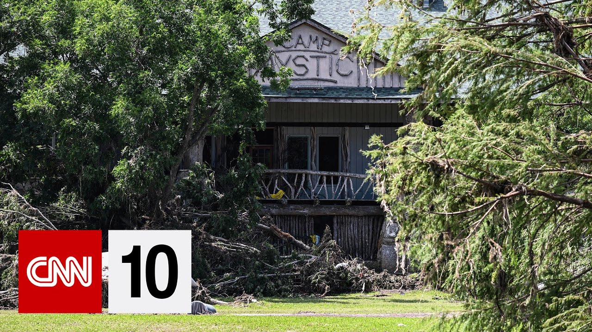

【CNN 20250712 每周要闻｜灾难性德州洪水｜史上最大数码相机拍摄的数千小行星和数百万星系震撼图像｜特斯拉自动驾驶出租车路测】
Summary: Severe flooding in central Texas caused over 100 deaths, with heroic rescue efforts amid climate change-driven extreme weather.
摘要： 德州中部遭遇严重洪水，造成超百人死亡，救援行动中涌现英雄事迹，极端天气与气候变化相关。

⏱️ Estimated Reading Time: 16 min
📚 四级生词 📚 六级生词 📚 雅思生词 📚 托福生词 📚 专八生词 📚 SAT生词 📚 考研生词 📚 GRE生词 📚 高考生词 📚 其它生词生词
Hello everyone, welcome to the show.
大家好，欢迎收看节目。
I'm Koi Wair, this is CNN 10 and we are here to get you caught up on some of the biggest news from around the world in 10 minutes time.
我是Koi Wair，这里是CNN 10，我们将在10分钟内为您带来全球最重要的新闻。
Now, it has been a really big week of news, but we will start with one of those stories that reminds us to never take the moments we're given for granted and to hold our loved ones a little tighter.
本周新闻重大，但我们首先报道一则提醒我们珍惜当下、紧握所爱的故事。
catastrophic flooding hit central Texas in the early hours of July 4th.
7月4日凌晨，灾难性洪水袭击德州中部。
More than an entire summer's worth of rain fell in some parts of the state in just a matter of a few hours.
数小时内，该州部分地区降雨量超过整个夏季。
That quickly formed a wall of rushing water, sweeping away cars, toppling trees and ripping homes from their foundations.
洪水迅速形成，冲走车辆、掀倒树木、撕裂房屋地基。
At the time of this taping, well over 100 people had died and Texas officials had announced that more than 100 people were still unaccounted for.
录制时，超百人遇难，德州官员称仍有超百人失踪。
And while search and rescue efforts continue, so do the stories of heroism and sacrifice from those who jumped into action.
搜救持续进行，涌现许多英雄事迹。
Some of the most inspiring and gut-wrenching coming from a Christian girls camp, Camp Mystic, as the Guadalupe River Bend began to swell in the middle of the night, counselors began kicking out windows, guiding hundreds of young girls to higher ground.
最震撼的故事来自基督教女童营地Camp Mystic，深夜瓜达卢佩河暴涨，辅导员砸窗引导数百女孩转移高地。
One security guard helped campers get onto mattresses to stay above the rising waters.
一名保安协助营员爬上床垫躲避上涨洪水。
And then there is US Coast Guard rescue swimmer and third class petty officer Scott Ruskin.
美国海岸警卫队救援游泳员、三级军士Scott Ruskin参与行动。
He and his team helped 165 campers get airlifted to safety.
他与团队协助165名营员空转移至安全地带。
It was pretty traumatic.
这非常痛苦。
I mean, yeah, you have a lot of kids.
许多孩子经历了可能最糟糕的一天。
They're having probably the worst day of their life.
他们失去朋友、失去亲人。
They're missing friends.
他们失去朋友。
They're missing loved ones.
他们失去亲人。
I was really just trying to comfort them and let them know like, hey, like, I don't know where your friends may be right now, but my only objective is to get you guys out of here and get you guys to safety.
我尽力安慰他们，告诉他们我的唯一目标是带他们安全撤离。
I'm sorry.
我很抱歉。
This happened to you guys, but you guys were so brave and tough and it made me like a better rescuer because you guys were acting so bravely.
你们如此勇敢坚强，让我成为更好的救援者。
But another nearby summer camp camp La Junta, a cabin was swept away by the rushing water.
附近营地La Junta的一间小屋被洪水冲走。
We have bunk beds in our cabins and it was going up to the top bunk and we had one choice and we had to swim out of our cabins.
洪水涨至上铺，我们只能游出小屋。
While emergency alerts were delivered to mobile devices to warn people of the flooding, many say they did not receive warnings until after the flooding reached its peak.
尽管手机收到洪水警报，许多人称洪水峰值后才收到警告。
As authorities are continuing their search and rescue efforts, they are also looking into what more might have been done to better warn people, also hoping to help prevent such tragedies from occurring in the future, especially given these flooding events seem to be happening more frequently.
当局在搜救同时调查如何改进预警，希望预防未来悲剧，因洪水频发。
Our meteorologist Derek Van Dam explains.
气象学家Derek Van Dam解释。
More than a summer's worth of rain fell in a matter of hours across the Texas Hill Country triggering unprecedented flash flooding.
德州丘陵地带数小时降雨量超夏季总量，引发空前山洪。
The deadly tragedy described as a one-and-one hundred-year flood disaster struck in an area that was entrenched in the worst drought anywhere in the country.
这场百年一遇洪灾袭击了全国最干旱地区。
This weather whiplash from drought to flood is yet another example of human-induced climate change and its impact on extreme weather.
旱涝急转是人类引起气候变化影响极端天气的例证。
One we have seen play out in California multiple times in recent years as a multi-year drought was followed by atmospheric river fueled flooding and mudslides and then came the deadly wildfires in January.
加州近年多次经历多年干旱后由大气河引发洪水泥石流，继而一月爆发致命野火。
The frequency and intensity of heavy rain events are increasing.
强降雨频率和强度增加。
Last year alone, a record 91 flash flood emergencies, the rarest, most extreme warning issued less than 1% of the time, came from the National Weather Service.
去年国家气象局发布破纪录91次山洪紧急警报（最极端警告，发布率不足1%）。
Generational flood events like last year's Hurricane Helene killed over 200 people and produced historic rain in North Carolina.
去年飓风Helene等世代洪灾致超200人死亡，北卡降雨创纪录。
The vaccines will remember Hurricane Harvey that dropped over 50 inches of rain in the Houston Metro and was one of America's costliest weather disasters.
民众记得飓风Harvey在休斯顿降超50英寸雨，是美国最昂贵气象灾害之一。
It's not just with hurricanes.
不仅飓风如此。
Residents across Kentucky and Tennessee are still recovering from inland flash flooding over the last couple of years.
肯塔基和田纳西居民仍在恢复过去几年内陆山洪的影响。
These events are a product of a warmer atmosphere that's able to hold more water vapor, acting to enhance rainfall rates, turning 100-year events into something every generation has to deal with.
更暖大气含更多水汽，加剧降雨，使百年一遇洪灾成为每代人都需面对的问题。
And even while the flood threat continues in Texas, parts of the east coast are reeling from their own flash flooding as the remnants of tropical storm chantel dropped months worth of rain in the Raleigh Dura-Maria of North Carolina, also resulting in floods that turn deadly.
德州洪水威胁持续时，东岸因热带风暴Chantel残余在北卡Raleigh-Durham降数月雨量，引发致命洪水。
Every region of the country has noticed a marked increase in heavy rainfall events, something that we will have to adapt and plan to in the future of our warming world.
全国各地区强降雨显著增加，我们需在变暖世界中适应规划。
For more information about how you, you can help Texas flood victims go to CNN.com slash impact or text flood to 707-07-07-07-0.
欲帮助德州灾民，请访问CNN.com/impact或发短信flood至7070707070。
Now to some stunning new images of thousands of asteroids and millions of galaxies taken by the largest digital camera ever constructed.
现在关注由史上最大数码相机拍摄的数千小行星和数百万星系震撼图像。
It's about the size of a car.
相机约汽车大小。
The Varacy Rubin Observatory sits on a mountain in Chile.
Vera Rubin天文台位于智利山上。
And scientists have just retrieved its first images, researchers at Duke University in North Carolina, helped design key pieces of the telescope which can detect the most minute details from dark matter.
科学家获取首批图像，杜克大学研究人员参与设计可探测暗物质细节的望远镜关键部件。
Inside is a 6,600-pound 3200-megapixel camera that crafted this beautiful imagery.
内部6600磅重3200兆像素相机拍摄了这些美丽图像。
Take a look.
请看。
Millions of galaxies, thousands of previously unknown space objects, all captured by this one groundbreaking observatory.
数百万星系、数千未知天体均由这一突破性天文台捕获。
Later this year, the Rubin Observatory will launch its 10-year mission, called the Legacy Survey of Space and Time.
今年晚些时候，Rubin天文台将启动十年"时空遗产巡天"任务。
It will scan the entire sky above the Southern Hemisphere every few nights to capture a time lapse of whizzing asteroids and comets, exploding stars and distant galaxies as they change.
每几晚扫描南半球全天空，捕捉小行星、彗星、超新星和遥远星系变化的延时影像。
Scientists say the data collected in the new facilities first year alone will surpass all other optical observatories combined.
科学家称该设施首年数据将超其他光学天文台总和。
Pacquoise hot shot which US state was the first to roll out the now iconic yellow pink color for taxi cabs.
美国哪个州率先推出标志性黄粉色出租车？
New York, California, Connecticut, or Illinois.
纽约、加州、康涅狄格或伊利诺伊。
Hey, Otaxay, if you said Connecticut, you are correct.
正确答案是康涅狄格。
Manufacturing mogul Albert Rockwell got the idea to open his taxi company in 1908 after he and his wife saw how popular cabs had become across Europe and yellow was his wife's favorite color.
1908年制造业大亨Albert Rockwell见欧洲出租车流行后创立公司，黄色是其妻最爱颜色。
Tesla's self-driving robot taxis are being beta tested on the streets of Austin, Texas right now.
特斯拉自动驾驶出租车正在德州奥斯汀测试。
So folks are taking them for a spin including some social media influencers and some of them have some questions about the right safety.
社交媒体影响者试乘，部分人对安全性存疑。
Our Ed Lavendera shows us why one watchdog group is sounding the alarm.
Ed Lavendera报道为何监督组织拉响警报。
Tesla has launched 10 to 20 robot taxis onto Austin streets.
特斯拉在奥斯汀投放10-20辆自动驾驶出租车。
There's the robot taxi.
这就是自动驾驶出租车。
So this is where the story might feel a little strange.
故事可能有些奇怪。
We can't get in a robot taxi so we followed it.
我们无法乘坐，只能跟随。
The robot taxi isn't fully driverless yet.
该车尚未完全无人驾驶。
There's a Tesla employee in the passenger seat.
副驾坐有特斯拉员工。
We watch the car navigate through traffic and make proper stops and turns.
我们观察车辆穿行交通，正确停转。
It seems to be moving around quite smoothly.
行驶似乎相当平稳。
It's exagging through various parts of South Austin.
它穿行奥斯汀南部多地。
What is interesting is we actually haven't seen anyone get in it.
有趣的是我们未见乘客上车。
And there's a reason for that.
这有原因。
So not just anybody can jump into one of these Tesla robot taxis.
并非所有人都能乘坐这些出租车。
In fact, the way the company rolled the taxis out is by inviting a group of social media influencers to town.
实际上公司邀请社交媒体影响者试乘。
How do you think robot taxi did?
你认为自动驾驶出租车表现如何？
It did great.
很棒。
The car didn't do anything crazy.
车辆未出现异常。
So I think they could probably start expanding pretty quick.
我认为可快速推广。
Chris says he took about 50 rides in three days and was impressed by a few moments.
Chris称三天乘坐约50次，对某些时刻印象深刻。
It pulled over.
车辆靠边。
The robot taxi just pulled over for the ambulance.
为救护车让路。
The robot taxi also navigated a construction zone.
还通过施工区。
We actually have to drive on the opposite side of the road.
需逆向行驶。
There were a few weird moments as Chris described it like when he tried to end the ride early.
Chris描述有些奇怪时刻，如提前结束行程。
And right now the vehicle will pull over to the nearest safe location.
车辆将停至最近安全地点。
Heck yeah, let's do it.
好的，执行。
The robot taxi stopped in the middle of the road.
车辆停在路中。
Chris says a remote operator had to correct the issue.
Chris称需远程操作员纠正。
The Tesla then moved to a safer drop off location.
之后车辆移至更安全下车点。
Dano Dowd founded a watchdog group called the Don Project to make technology safer for humans.
Dano Dowd创立监督组织The Dawn Project确保技术对人类安全。
The group argues that Tesla's full self driving software, which has been available for several years, is not safe enough.
该组织认为特斯拉多年提供的全自动驾驶软件不够安全。
We have over a thousand videos of these fails.
我们有超千段故障视频。
And we've got them all categorized by running red lights, running stop signs, excessive speeding, sliding the brakes on for no reason.
分类包括闯红灯、闯停车标志、超速、无故刹车。
Tesla did not respond to any of our questions for this story.
特斯拉未回应本次报道提问。
We should point out that the company does make continuous software improvements.
需指出公司持续改进软件。
But for O'Dowd, the Tesla driverless technology puts lives at risk.
但O'Dowd认为特斯拉无人驾驶技术危及生命。
They need to be off the road.
需停止上路。
This week's story getting a 10 out of 10, a cruise ship rescue that could have come straight out of Hollywood.
本周满分故事：堪比好莱坞的邮轮救援。
A story about courage and quick thinking.
关于勇气和快速反应的故事。
Imagine this.
想象一下。
You're on a family vacation in the middle of the ocean aboard a Disney cruise ship.
你在迪士尼邮轮上享受家庭度假。
Suddenly, a little girl falls overboard around 1115 AM.
上午11:15，一名小女孩落水。
The five year old girl accidentally plunged 45 feet overboard through one of the ship's port holes on the fourth level.
这名5岁女孩意外从四层舷窗坠落45英尺入海。
And while bystanders immediately called for help from the ship's crew, the girl's dad said, I'm not waiting for anybody.
旁观者立即呼叫船员，但女孩父亲表示不等待救援。
So he jumped into the ocean after her.
他跳海救女。
Despite the choppy water, having to tread water with his daughter in his arms for a whole 20 minutes, dad indeed is a hero.
尽管海浪汹涌，他怀抱女儿踩水20分钟，确是英雄。
He kept his daughter safe until the ship's rescue boats were able to navigate down to pull them out.
他保护女儿直至救援艇赶到。
And everyone was like cheering on the ship.
船上众人欢呼。
And just the amazing quick response of Disney made a big difference.
迪士尼的快速反应至关重要。
No information has been released about how the girl fell overboard.
女孩落水原因未公布。
The good news is that both daughter and dad were taken safely back to the ship.
好消息是父女安全回船。
All right, super stars.
好了，超级明星们。
We have been working hard to open and document all of your thoughtful, creative heartfelt and sometimes silly care packages this summer.
我们今夏努力拆阅记录你们用心、创意、真挚有时搞笑的关怀包裹。
We've gotten some good ones and try center trojans in Iowa.
收到一些很棒的作品，如爱荷华州Try Center Trojans的。
Congratulations on winning your state football championship there in high school.
祝贺你们赢得高中州足球冠军。
Are you trying to tell me something?
你们想传达什么吗？
Long hair, blonde hair, pink hair, no hair.
长发、金发、粉发、无发。
Don't care.
不在乎。
Play that Friday music night there.
播放周五夜音乐。
My team and I, we are waking up.
我和团队正在觉醒。
Over the love you show the show.
因你们对节目的爱。
Today we have shout outs going to miss grooms and Mr. Whitehurst battlefield middle school.
今天要感谢Battlefield中学的Miss Grooms和Mr. Whitehurst。
In Fred's words Virginia, thank you for this incredible, impeccable football helmet signed by 200 students.
用Fred的话说：弗吉尼亚，感谢这个由200名学生签名的完美橄榄球头盔。
And this shout out goes to Mr. Mayor in South Fork High School in King Cade, Illinois.
还要感谢伊利诺伊州King City南福克高中的Mr. Mayor。
We can look at this awesome custom CNN 10 jersey y'all.
请看这件超棒的自定义CNN 10球衣。
Go ponies and congrats on you winning your championship.
加油小马队，祝贺夺冠。
You will be seeing some of these on our Wall of Fame and in episodes soon to come.
这些将出现在我们的荣誉墙和未来节目中。
Go out and make someone smile today y'all.
今天去让某人微笑吧。
You just may be the spark of joy someone needs.
你或许正是他人需要的快乐火花。
Rise up.
崛起吧。
Have an awesome weekend everyone.
祝大家周末愉快。
I'm Koi Wairan.
我是Koi Wairan。
We are CNN 10.
这里是CNN 10。